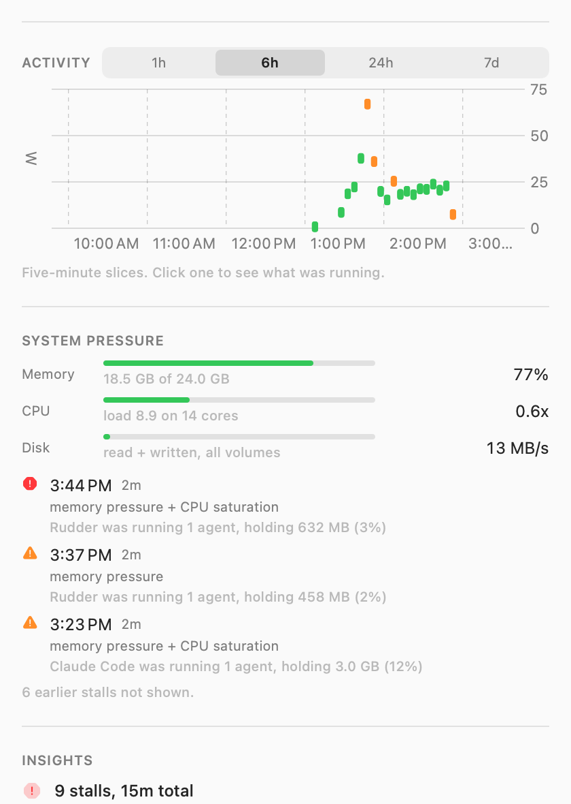

macOS tells you “Ghostty — 41%”, which is useless with eight tabs open. BatteryScope tells you it was the battery tab, running claude, and shows you the moment your Mac froze because of it.
Signed and notarized by Apple. Drag to Applications and open — no warning, no xattr dance.
Every other tool stops at the app name. This one keeps going until it reaches something you can act on.
A terminal tab is a real object in the process tree — your terminal forks one shell per tab — so it can be named without the accessibility API and without screen recording permission. The label is the folder the tab is sitting in, which is where your terminal gets its own title.
Everything spawned inside a tab counts toward it, however deep — rudder → claude → swift-frontend is one row.
Browser Helper (Renderer) answers nothing. Walking up to the process just below launchd recovers Arc.
An orchestrator running eight agents is one row holding 11 GB, not eight identical claude rows.
Memory pressure, swap thrash, CPU saturation, thermal throttling and disk saturation, sampled every five seconds.
If the sampler itself couldn’t get scheduled, that gap is the evidence — and it’s told apart from sleep by the monotonic clock.
The day in slices. Click any one to see what was running during those five minutes.
Click the icon for the whole picture. Real output, real machine.

Two minutes, no password.
Get the DMG, drag BatteryScope to Applications, and open it. It appears in your menu bar — no Dock icon.
To collect in the background and start at login: git clone https://github.com/viraatdas/battery && cd battery && ./Scripts/install-agent.sh
Ranking by measured energy rather than CPU needs powermetrics, which is root-only: sudo ./Scripts/install-daemon.sh